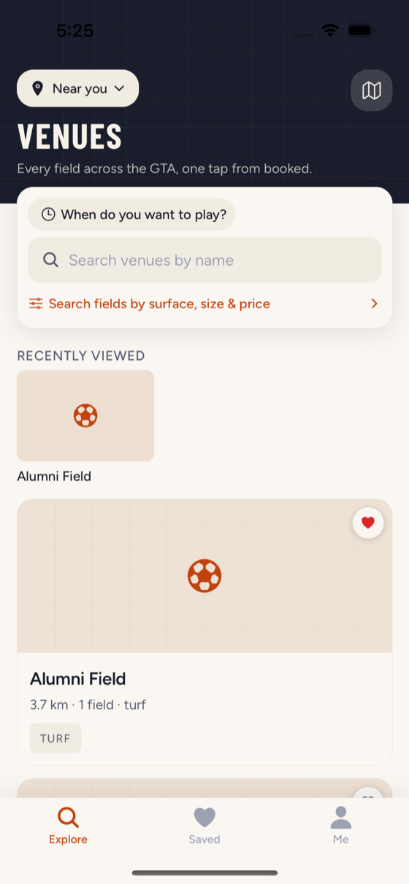
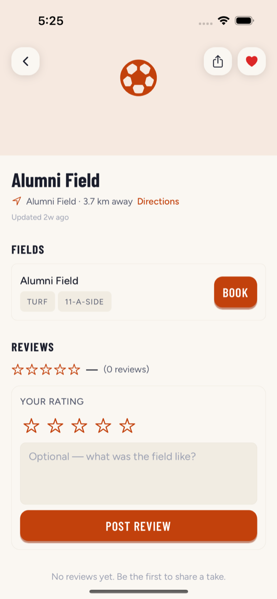
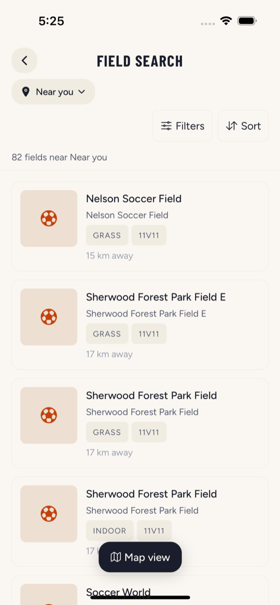
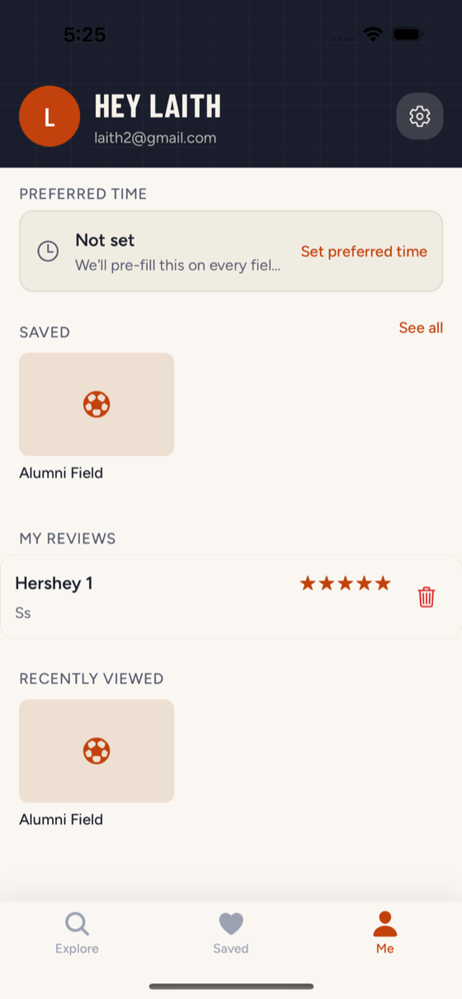

Every soccer field in the GTA, in one app. Browse turf, indoor, and outdoor pitches, filter by size and price, and book direct with the operator.

One place for every pitch in the city, with the details that actually decide where you play.
Indoor domes, outdoor turf, grass parks, and futsal courts across the GTA — as a list or a live map.
Surface, size from 5-a-side to 11-a-side, and price. See distance, hours, amenities, and photos at a glance.
One tap takes you to the operator's own booking page — you always reserve straight with the field.
Keep the fields you play at, set your usual day and time once, and pick up where you left off.
See what other local players say about a pitch before you commit — and add your own.
Made for pickup organizers and league captains chasing a free slot tonight. Free to use.


